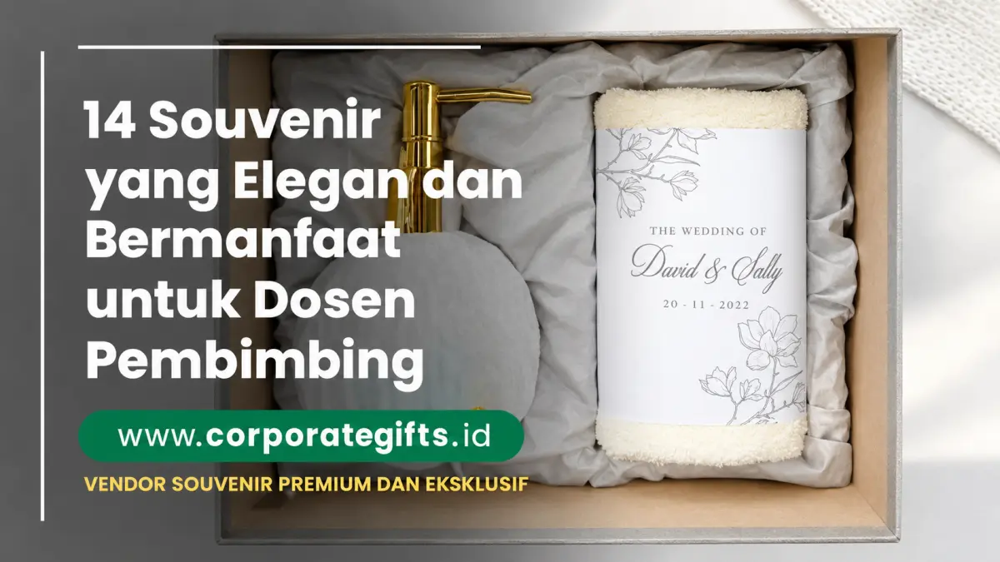

Corporate Gifts ID - Souvenir untuk dosen pembimbing adalah hadiah ucapan terima kasih yang diberikan mahasiswa kepada dosen pembimbing setelah sidang skripsi atau tugas akhir dinyatakan lulus. Pilihan souvenir dosen pembimbing yang elegan dan bermanfaat antara lain notebook custom, pulpen logam premium, tumbler stainless SUS 304, gift set kantor, hingga plakat ucapan terima kasih berdesain minimalis. Artikel ini merangkum 14 rekomendasi kado dosen pembimbing yang cocok untuk berbagai karakter dosen, lengkap dengan etika waktu pemberian dan tips pengemasan agar terasa personal serta penuh makna.
Poin Kunci Souvenir Dosen Pembimbing:
- Makna & Apresiasi: Simbol penghormatan atas dedikasi waktu, masukan metodologi, dan kesabaran dosen selama masa bimbingan.
- 14 Kurasi Fungsional: Benda kerja praktis yang menunjang rutinitas mengajar, riset, maupun penataan meja kerja kantor dosen.
- Etika Timing: Wajib diserahkan pasca-pengumuman kelulusan sidang atau yudisium untuk menjaga integritas akademis.
- Personalisasi Elegan: Penambahan grafir laser nama lengkap dengan gelar akademis serta kartu ucapan tulisan tangan.
- Pilihan Kemasan: Hardbox magnetic berlapis busa beludru untuk menghadirkan kesan mewah dan tertata rapi.
Tabel 14 Rekomendasi Souvenir Dosen Pembimbing
Berikut rangkuman perbandingan kategori, material, estimasi budget, dan nilai guna dari 14 rekomendasi cinderamata dosen pembimbing:
| No | Rekomendasi Item | Kategori & Bahan | Estimasi Budget | Keunggulan Utama |
|---|---|---|---|---|
| 1 | Notebook Kulit Custom Nama | Stationery (Kulit Sintetis PU) | Rp65.000 - Rp120.000 | Fungsional untuk mencatat rapat dan riset harian |
| 2 | Pulpen Logam Grafir Laser | Executive Pen (Metal Rollerball) | Rp50.000 - Rp150.000 | Elegan untuk tanda tangan berkas yudisium |
| 3 | Tumbler Stainless SUS 304 | Drinkware (Vacuum Insulated) | Rp75.000 - Rp175.000 | Menjaga minuman hangat saat jam mengajar |
| 4 | Executive Gift Set Kantor | Gift Set (Notebook + Pen + Hardbox) | Rp150.000 - Rp350.000 | Sangat mewah dalam kemasan kotak beludru |
| 5 | Tas Laptop Kulit Kerja | Apparel / Bag (Kulit PU Matte) | Rp180.000 - Rp350.000 | Melindungi laptop dosen dengan tampilan profesional |
| 6 | Frame Foto Akrilik Kenangan | Dekorasi (Akrilik Magnet / Kayu) | Rp45.000 - Rp100.000 | Penuh makna sentimental foto bersama tim bimbingan |
| 7 | Plakat Akrilik / Kayu Terima Kasih | Penghargaan Formal (Akrilik Grafir) | Rp90.000 - Rp220.000 | Penghormatan resmi yang awet dipajang di ruang kerja |
| 8 | Buku Pengembangan Diri / Akademis | Literasi Edukatif | Rp80.000 - Rp180.000 | Menambah wawasan dengan pesan khusus di lembar awal |
| 9 | Tanaman Sukulen Meja Minimalis | Dekorasi Hijau (Pot Keramik) | Rp35.000 - Rp75.000 | Memberikan kesegaran alami di meja kerja dosen |
| 10 | Powerbank Ringkas Fast Charging | Gadget (10.000 mAh Slim) | Rp120.000 - Rp250.000 | Mendukung mobilitas dosen saat tugas luar kota |
| 11 | Kalender Meja Kayu Eksklusif | Stationery (Kayu Jati Belanda / Akrilik) | Rp50.000 - Rp110.000 | Membantu penjadwalan bimbingan sepanjang tahun |
| 12 | Pouch Organizer Kulit Sintetis | Aksesoris (Kulit Tekstur Jeruk) | Rp45.000 - Rp95.000 | Merapikan charger, flashdisk, dan alat tulis |
| 13 | Diffuser Aromaterapi Ultrasonic | Self-Care (Kayu Light Wood) | Rp110.000 - Rp250.000 | Menciptakan suasana rileks saat dosen bekerja lembur |
| 14 | Voucher Belanja Toko Buku | Gift Card | Rp100.000 - Rp300.000 | Fleksibel, dosen dapat memilih buku bacaan favorit |
14 Rekomendasi Souvenir Elegan untuk Dosen Pembimbing
Berikut penjelasan mendalam mengenai 14 pilihan cinderamata yang dapat Anda sesuaikan dengan karakter dan preferensi dosen:
1. Notebook Custom dengan Grafir Nama
Notebook dengan sampul kulit sintetis berkualitas dari koleksi souvenir kantor premium memberikan kesan profesional. Tambahkan nama lengkap beserta gelar akademis di sampul depan agar terasa lebih personal dan eksklusif.
2. Pulpen Premium dengan Grafir Laser
Pulpen logam berbobot pas dengan ukiran nama adalah simbol penghormatan akademis yang abadi. Pilih warna elegan seperti matte black, silver chrome, atau rose gold yang dibahas di artikel souvenir pulpen alat tulis premium.
3. Mug atau Tumbler Stainless Custom
Tumbler stainless SUS 304 atau pilihan modern seperti smart tumbler dengan sensor suhu LED sangat fungsional digunakan sehari-hari di ruang dosen maupun saat mengajar di kelas.
4. Gift Set Kantor Elegan
Kombinasi antara notebook kulit, pulpen metal, dan flashdisk kartu dalam kotak kemasan eksklusif memberikan kesan mewah yang sempurna. Simak referensi lengkapnya di panduan gift set wisuda dan sidang skripsi.
5. Tas Kulit Kerja / Laptop Sleeve Eksklusif
Tas pelindung laptop berbahan kulit sintetis dengan bantalan busa tebal memberikan perlindungan prima pada perangkat kerja dosen saat berpindah ruang rapat.
6. Frame Foto Akrilik Kenangan Bersama
Pigura foto akrilik magnetis berisi foto momen bimbingan atau perayaan pasca-sidang bersama tim mahasiswa bimbingan beliau yang sarat akan nilai sentimental.
7. Plakat Ucapan Terima Kasih Minimalis
Plakat akrilik bening tebal atau kayu solid bertuliskan ucapan terima kasih tulus atas bimbingan skripsi menjadi cinderamata formal yang awet dipajang di lemari piagam dosen.

Paket cinderamata dosen pembimbing: kombinasi tumbler grafir nama, notebook eksklusif, dan plakat mini berdesain elegan.
8. Buku Inspiratif & Pengembangan Diri
Buku seputar riset, kepemimpinan, atau filsafat pendidikan yang relevan. Jangan lupa menyisipkan kartu pembatas bertuliskan ucapan terima kasih di lembar pertama.
9. Tanaman Mini Meja Kerja (Sukulen / Kaktus)
Pot keramik minimalis berisi tanaman sukulen mini yang mudah dirawat mampu memberikan nuansa hijau yang menyegarkan di meja kerja dosen yang padat berkas.
10. Powerbank Custom Fast Charging
Pengisi daya portabel ramping dari katalog merchandise korporat berkapasitas 10.000 mAh yang sangat bermanfaat saat dosen menghadiri konferensi ilmiah luar kota.
11. Kalender Meja Kayu Eksklusif
Kalender meja abadi berbahan kayu alami atau kalender tahunan berdesain elegan untuk memudahkan dosen mencatat jadwal sidang dan bimbingan mahasiswa.
12. Pouch Kulit Organizer Aksesoris
Pouch multifungsi berbahan kulit sintetis untuk merapikan pointer presenter, spidol, adaptor charger, dan kabel presentasi agar tidak tercecer di dalam tas.
13. Diffuser Aromaterapi Ultrasonic
Alat pengharum ruangan uap lembut dengan minyak esensial lavender atau sandalwood yang membantu menciptakan atmosfer tenang saat dosen memeriksa revisi skripsi.
14. Gift Card / Voucher Toko Buku
Solusi hadiah yang sangat netral dan fungsional, memberikan kebebasan bagi dosen untuk memilih literatur referensi ilmiah yang sedang beliau butuhkan.
Tips Memilih Souvenir untuk Dosen Pembimbing
Agar hadiah Anda berkesan mendalam dan tetap menjunjung tinggi etika akademik, perhatikan panduan praktis berikut:
- Sesuaikan dengan Karakter & Kebutuhan Dosen: Amati kebiasaan dosen saat bimbingan. Dosen yang gemar minum teh/kopi akan senang menerima tumbler atau tea set, sedangkan dosen yang praktis akan mengapresiasi notebook dan flashdisk.
- Utamakan Kualitas Dibandingkan Kuantitas: Lebih baik memberikan satu barang berkualitas tinggi (seperti pulpen metal berukir nama) daripada paket banyak barang dengan kualitas seadanya.
- Sertakan Kartu Ucapan Tulis Tangan: Kalimat tulus yang mencantumkan kesan pesan selama bimbingan memiliki dampak emosional yang jauh lebih besar daripada harga benda itu sendiri.
- Perhatikan Waktu Pemberian (Etika Akademik): Waktu paling aman dan santun adalah setelah sidang dinyatakan lulus atau saat yudisium/wisuda untuk menghindari persepsi konflik kepentingan, sebagaimana dipaparkan pada panduan souvenir dosen penguji skripsi.
- Kemas dalam Hardbox yang Rapi: Kemasan kotak berpita satin atau kotak kayu menambah nilai eksklusif secara instan, seperti opsi pada lini hampers & parcel elegan.
Pertanyaan Umum Seputar Souvenir Dosen Pembimbing (FAQ)
Kesimpulan
Memberikan souvenir kepada dosen pembimbing adalah wujud penghargaan atas dedikasi dan ilmu yang telah dibagikan selama masa perkuliahan. Dengan memilih cinderamata yang fungsional, bermutu, serta dikemas secara elegan, rasa terima kasih Anda akan tersampaikan dengan cara yang paling berkesan.
Jelajahi koleksi kado dosen dan cinderamata wisuda melalui katalog resmi kami atau ajukan pesanan custom via formulir permintaan penawaran harga bersama CorporateGifts.ID.